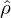
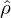
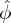
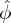

is obtained, the electric potential ϕ is finally reconstructed via the inverse
Fourier transformation
is obtained, the electric potential ϕ is finally reconstructed via the inverse
Fourier transformation
The normalized one-dimensional Poisson equation is given by Eq. (93). For notation simplicity, omit the over-bar on ϕ and x, then Eq. (93) is written
|
| (100) |
This is a two-points boundary value problem. Two boundary conditions are needed to determine the solution. Assume the periodic boundary condition ϕ(0) = ϕ(L) and note that ϕ can contain an arbitrary constant. Thus the periodic boundary condition alone is sufficient to specify the electrical field. We use Fourier transformation method to solve Eq. (100). The Fourier transformation of the left-hand side of the above equation is written
|
| (102) |
where
|
| (103) |
is the Fourier transformation of ρ. After is obtained, the electric potential ϕ is finally reconstructed via the inverse
Fourier transformation
|
| (104) |
In the numerical implementation, the Fourier transformation in Eq. (103) and the inverse transformation in Eq. (104) are discretized by the Discrete Fourier Transformation (DFT), which is further evaluated by using the FFT algorithm (I use the FFTW library). Set up uniform grid-points in x-direction: xj = jΔ for j = 0,1,2,…,N, as is shown in Fig. (3).
Let ρj = ρ(xj) and ϕj = ϕ(xj). Let  j and j denote the corresponding DFT. Using the sampled points ρj with
j = 0,1,2,…,N − 1, we can obtain the DFT  j. Note that the corresponding wave-number k of
j and j denote the corresponding DFT. Using the sampled points ρj with
j = 0,1,2,…,N − 1, we can obtain the DFT  j. Note that the corresponding wave-number k of  j (also for  j) is given by
k = j2π∕(NΔ) for j = 0,1,…,N∕2 and k = (j − N)2π∕(NΔ) for j = N∕2 + 1,…,N − 1 (this corresponds to the negative
wave-number part). Use Eq. (102) and the corresponding expression of the wave-number, the discrete form of Eq. (102) is
written
j (also for  j) is given by
k = j2π∕(NΔ) for j = 0,1,…,N∕2 and k = (j − N)2π∕(NΔ) for j = N∕2 + 1,…,N − 1 (this corresponds to the negative
wave-number part). Use Eq. (102) and the corresponding expression of the wave-number, the discrete form of Eq. (102) is
written
|
| (105) |
for j = 1,2,…,N∕2, and
|
| (106) |
for j = N∕2 + 1,N∕2 + 2,…,N − 1. The j = 0 case is a special one because in this case k = 0 and k appears in the
denominator of (102). Since the overall charge neutrality∫
−∞∞ρdx = 0 implies  0 = 0. we usually set
0 = 0. we usually set  0 = 0. After
obtaining j with j = 0,1,…,N − 1, we can obtain ϕj through the inverse DFT.
0 = 0. After
obtaining j with j = 0,1,…,N − 1, we can obtain ϕj through the inverse DFT.
Knowing the electron potential ϕj, the electric field is obtained through the following central difference scheme
|
| (107) |
The electric field at the boundary points are obtained by using the periodic boundary conditions of ϕ.
In the above we use Fourier transformation method to get the electric potential and then use finite difference scheme to calculate the electric field. This is a mixed way to calculate the electric field. We can use only Fourier transformation method to solve for the electric field. In terms of the electric field, Poisson equation (93) is written
|
| (108) |
For notation simplicity, omit the over-bar on variables, the above equation is written
|
| (109) |
The Fourier transformation of the left-hand side of the above equation is written
|
| (111) |
The discrete form of Eq. (111) is similar to the form given in Eqs. (105) and (106), i.e.,
|
| (112) |
for j = 1,2,…,N∕2, and
|
| (113) |
for j = N∕2 + 1,N∕2 + 2,…,N − 1.